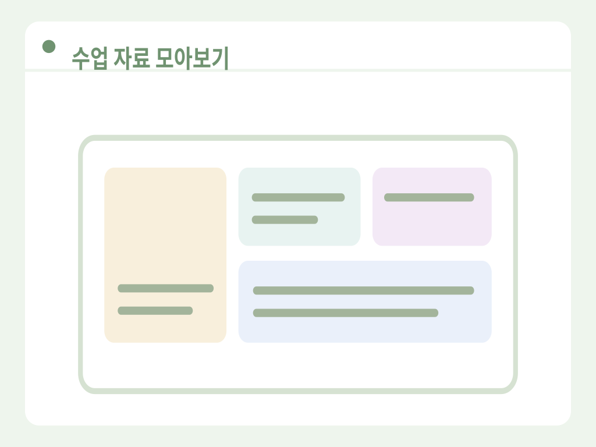
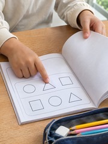
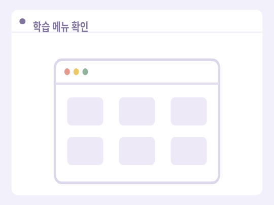

서비스 기능
온라인 수업을수업 자료
꿈나무 수업수업 관리 방법
수업 관리 기능학교와 교육기관의 이용 조건은 문의 전화로 안내합니다.교사는 과목과 단계를 정해 시간표를 만들고 학급별 기록을 확인합니다.교사는 교과서를 고르고 학생별 학습 과정과 단계를 설정할 수 있습니다.단원 평가 결과에서 다시 연습할 주제를 찾고 비슷한 문제를 풉니다.주간·월간·단원별 기록에 학생의 학습 결과와 진행 현황이 표시됩니다.기관 이용 기록
교사 이용 정보수업 전·중·후에 이용하는 기능을 확인합니다.개념 영상은 주제별 설명을 수업 자료와 함께 이용할 수 있습니다.초등학교 수업
# 평가 기록학교 수업
# 복습 과제기관 수업
수업 안내 영상
수업 이용 방법평일09:00 ~ 18:00점심 시간12:00 ~ 13:00
* 주말과 공휴일에는 운영하지 않습니다.
꿈나무 수업문의 내용은 전화로 확인해 주세요.꿈나무 수업문의 내용은 전화로 확인해 주세요.
체험·도입 문의